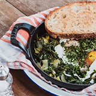
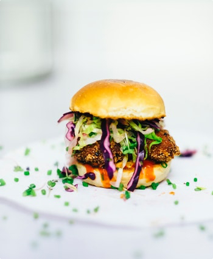
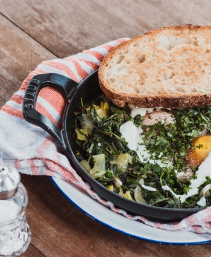

Découvrir
NOTRE GASTRONOMIE
Au Fiasco, chaque assiette célèbre une cuisine française généreuse, précise et profondément ancrée dans les saisons. Nous travaillons des produits choisis avec soin pour composer des plats élégants, sincères et pensés pour le plaisir de la table.
En savoir plus
Saveurs
RECETTES PENSÉES AVEC SOIN
Nos créations mêlent techniques de maison, cuissons maîtrisées et touches méditerranéennes. Chaque recette recherche l'équilibre entre la finesse, la gourmandise et la fraîcheur pour offrir une expérience aussi belle que savoureuse.
En savoir plusChef
RENCONTREZ NOTRE CHEF EXÉCUTIF, CHRISTIAN JACOB
Christian Jacob signe une cuisine d'auteur inspirée des grandes maisons françaises et des rivages méditerranéens. Sa signature repose sur des jus travaillés, des cuissons nettes et une attention constante portée au produit.
Derrière chaque service, il défend une vision généreuse de la gastronomie: une table élégante, accessible et sincère, où la précision technique reste toujours au service de l'émotion.
Découvrir la brigadeRecettes
NOUS PARTAGEONS NOS RECETTES AVEC VOUS
Retrouvez l'esprit du Fiasco à travers nos conseils de préparation, nos associations de saveurs et quelques recettes emblématiques imaginées pour prolonger l'expérience à la maison.
29
SEP
Comment réussir un oeuf parfait, crème de parmesan et champignons de saison avec une texture soyeuse et un dressage de table gastronomique.
30
SEP
Les secrets d'un bar rôti à la peau croustillante, servi avec fenouil confit, agrumes frais et sauce vierge aux herbes.
31
SEP
Une pavlova aux fruits rouges légère et précise, entre meringue croustillante, crème fouettée vanillée et fruits acidulés.